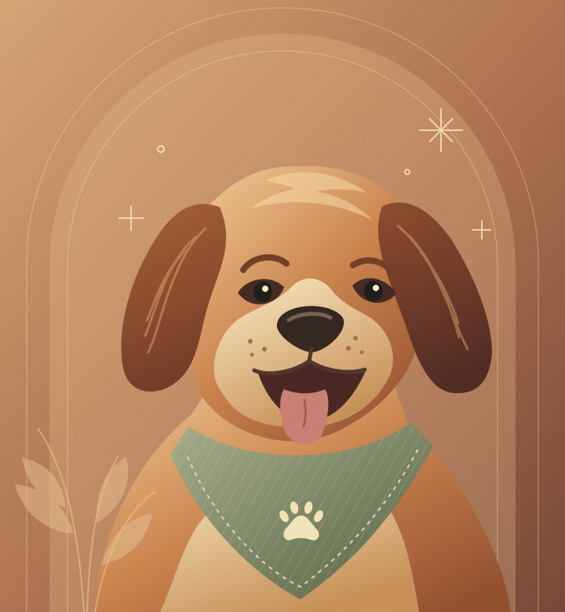

Acolhimento desde a chegada
Um momento de adaptação ajuda o pet a se familiarizar com o ambiente.
Banho & tosa boutique
Banho, tosa e cuidados para cães e gatos, em um ambiente acolhedor que respeita o ritmo de cada pet.
Projeto demonstrativo · Estabelecimento fictício

O estúdio
O Pata & Pelo Studio imagina uma rotina de banho e tosa em que o animal tem espaço para se adaptar e o tutor pode explicar o que faz diferença no cuidado.
Um momento de adaptação ajuda o pet a se familiarizar com o ambiente.
O porte, a pelagem e o temperamento orientam cada sessão.
Manuseio delicado e pausas respeitam os sinais do animal.
Serviços
Escolha um serviço para preencher a solicitação. Os valores são exemplos fictícios.
Limpeza, secagem e escovação no ritmo do seu pet.
Aparo nas regiões que pedem manutenção entre as tosas.
Corte pensado para a pelagem, a rotina e o conforto do animal.
Cuidado complementar para ajudar a manter os fios macios.
Sessão adaptada às sensibilidades e necessidades do seu pet.
Diferenciais
A escolha considera o tipo de pelagem e as sensibilidades informadas pelo tutor.
A sessão pode incluir pausas e ajustes conforme a reação do pet.
Escolha o serviço, a data e o período e revise o resumo ao concluir a simulação.
Galeria
Ilustrações originais do conceito Pata & Pelo.
Perguntas frequentes
Escolha um serviço e preencha o formulário demonstrativo. Ao concluir, você verá um resumo na própria página. A simulação não reserva horários nem envia mensagens.
Use nomes fictícios para o tutor e o pet. Selecione espécie, serviço, data e período. As observações são opcionais.
Os preços exibidos são exemplos fictícios. Em um atendimento comercial, o valor poderia variar de acordo com porte, pelagem, condição dos fios e serviço escolhido.
A demonstração inclui banho completo, tosa higiênica, tosa personalizada, hidratação da pelagem e cuidados especiais.
O Pata & Pelo Studio é fictício e não possui canais comerciais. Você pode visualizar e copiar uma prévia de mensagem no formulário.
Solicitação de agendamento
Escolha o serviço e indique quando prefere trazer seu pet. Ao concluir, você poderá revisar e copiar o resumo.
Use dados fictícios. O resumo fica nesta página até você sair ou iniciar outra simulação. Nenhum dado é enviado.
Solicitação de demonstração registrada nesta página. Nenhum agendamento real foi realizado.
Contato
Este estúdio é fictício. O formulário e a prévia de mensagem permitem experimentar como seria uma solicitação.
Voltar ao formulário